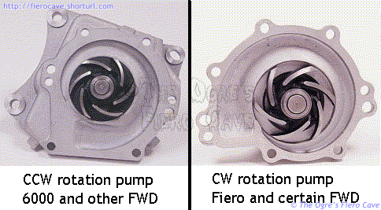
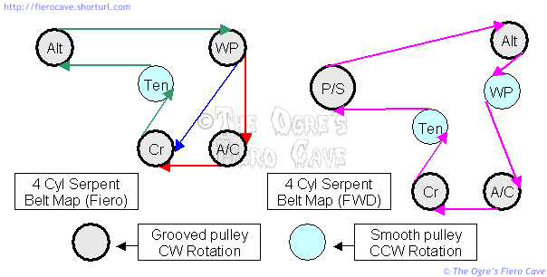

Go Home
Site Map
Go Home
Site Map
DIS dun dead...
Note: I have been told that VIN U motors are shorter than VIN R motors. VIN U motors will not work for Fiero.
Replacing the 87-88 L4
Application: This is written for the 87-88 Fiero L4 but some of it may also apply to the older ones. I don't have any way to verify anything on the older motors.
Notice: This document is not complete. It's a collection of things I know or suspect but not everything is completely verified. It is the result of preplanning a future engine swap, and I've also included a more detailed explanation of the water pump problem encountered by one or two people. (I knew about this problem but it hadn't come up until then.) Check all motors carefully before you buy them but check everything at least twice before buying an alternate motor like VIN U!
Since the DIS motors were only used for two years, you might expect the supply of good used DIS motors for Fiero to be pretty thin. This really isn't the case. The DIS motor, with and without the balance unit, is used in over 100 GM models and in many cases they are easily moved to Fiero. The later 2.5l DIS motors are listed 112-114HP in some literature.
The item to watch in the FWD cars is the VIN code for the motors, which will be R. The VIN R ones should be direct drop in. (Read about that further down.)
Make sure you remember what it came from when ordering parts. Other versions do have internal differences! Even later versions of Vin R likely have differences that could be important.
The Truck version of the 2.5 is VIN E or A and at least some parts from these should work. It's possible the entire engine will. I have not been able to inspect one to see if it has the ability to accept the "side saddle" water pump used in Fiero and FWD applications. This motor is confirmed as using a different ECM and an ECM controlled EGR. I did notice that it appears to be drilled on both sides for the starter, but I wasn't able to see if the holes are tapped.
What Cars Use these Motors?
Bad Force Balance Units
I'm told there might be parts available for the balancer and oil pump. I don't know where to get any of that. If the parts cost much over $100 then you may want to look for a good used motor instead of repairing this one.
Direct drop in?
WARNING! If the water pump has a smooth pulley, like the belt tensioner, you must change the whole pump and housing to Fiero parts. Pumps with the smooth pulley are made to rotate CCW but Fiero requires a CW pump. (Rotation when viewed from the pulley end of shaft.) If the CCW pump functions at all, it will never run at full capacity.
To move an FWD motor to Fiero you will have to change pulleys, brackets, change to the Fiero belt tensioner. You will need a special tool to change the water pump pulley without removing the pump.
If the motor has ECM controlled EGR then you'll have to change it to the Fiero EGR valve and vacuum line setup. All the other sensors should be the same except maybe the oil pressure unit. (Oil pressure senders were revised in 88 I think.)
I've been told you also need to change the oil pan but can't verify that. It's something to watch out for. The issue here would be if the FWD pan does not clear the motor mount bracket.
You can put a motor with a balance unit in place of the regular block and vice versa.
Suckers
Watch out for vacuum ports! The donor car may have a different vacuum line map. When you put the motor into Fiero, make certain you connect everything to the right ports and that you securely plug/cap any unused ones. Yes it does matter what vacuum port is used on the TBI! Some TBI vacuum connectors are connected to manifold vacuum while others only develop vacuum after the throttle opens various amounts.
I'm not aware of any of any case where you would have to modify the TBI to provide vacuum ports but that doesn't mean there aren't any. If anything I expect you'll be blocking spare ports.
The DIS L4 doesn't have many places for vacuum ports on it. The only one I can think of besides the big one for the brakes is a small one to the left of the TBI.
This isn't cool.
There is a cooling system issue you've got to watch out for whenever you are changing motors configured with serpent belts. This issue is created by the fact that you can use either side of a serpent to drive a load. Do not simply change the pump pulley to meet your needs!
What difference does pump rotation make?
Many engine water pumps, in fact the vast majority of centrifugal pumps, are optimized to produce maximum flow only in one direction of rotation. Below are two of the pumps used on the DIS L4. (Direction of rotation when viewed from pulley end of shaft.)

(Source: Composite of images from PartsAmerica.com)
Notice the curve of the impeller vanes and the shape of the scroll. If you spin either pump backwards it will pump very poorly if at all. Even if you pump enough water to keep the engine cool, you are greatly increasing the drag the pump places on the engine.
Fortunately, it is very easy to know which way you're spinning a pulley in a serpent belt set. All grooved pulleys rotate the same as the crank, while all smooth pulleys rotate opposite the crank. On the 2.5l L4 that means all grooved pulleys spin clockwise (CW), and all smooth ones spin counter clockwise (CCW).
You've got to watch out with the FWD cars. Most of the ones I've seen use the pump on the left. (87-88 Grand Am, Olds Cutlass Calais, Pontiac 6000.) There are a few FWD cars that use the same pump as Fiero. In those the pump has a hybrid pulley with a grooved serpent tack and a V track. The pump is driven by the serpent track and the V drives some other accessory. For that motor you would probably only have to change to Fiero's serpent pulley. (I believe 91 Olds Cutlass Calais is one like this.) There is a tool that will do this without removing the pump from the engine.
Belt Maps
To further illustrate the pulley rotation, here are the serpent belt maps for both water pump setups showing the direction of belt travel. The Fiero map shows routing with and without AC option.

While it's out...
Replace the timing gears! Use whichever method you like but replace them while they are easy to get at!
On the non-balancer motor, look at the end of the engine mount bracket below the oil filter. If you make something to fill the gap between the bracket and block then you'll have an easier time with oil changes. Plugging that gap will help prevent the flood of oil running down inside the bracket and all over the place. Almost anything would be an improvement over the original setup.
Before installing a balancer motor, make sure you can get the oil filter plug out! Lisle makes a tool to grab the plug if the nut is stripped. (Lisle # 53000 You can get it anyplace that carries Lisle tools.)
Change the oil pressure sender. This thing is a bastard to reach with the engine in the car.
You should also consider repairing/replacing the heater hose fitting on the bottom of the intake manifold. If the fitting is bad then the hose won't seal. The fitting has a nasty habit of breaking so you want this thing fixed while you can get to it. If it breaks later, you'll likely have to remove the intake manifold to fix it.
Changing the oil pump isn't a bad idea. This is a judgment call that depends how many miles are on the donor motor and how good a shape it's in. Keep in mind that the oil goes thru the pump unfiltered. The pump can be more worn than the rest of the motor. Many people say use a high volume pump. Unless you are doing some kind of performance job this probably isn't needed. Keep in mind that any increase in pump load is transferred to the cam and timing gears. (Aftermarket pumps aren't even an option on balancer motors because that pump is built into the balancer.)